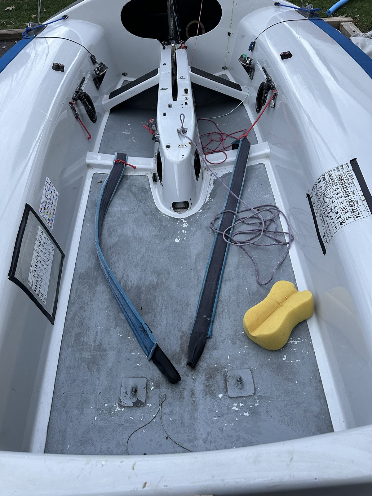
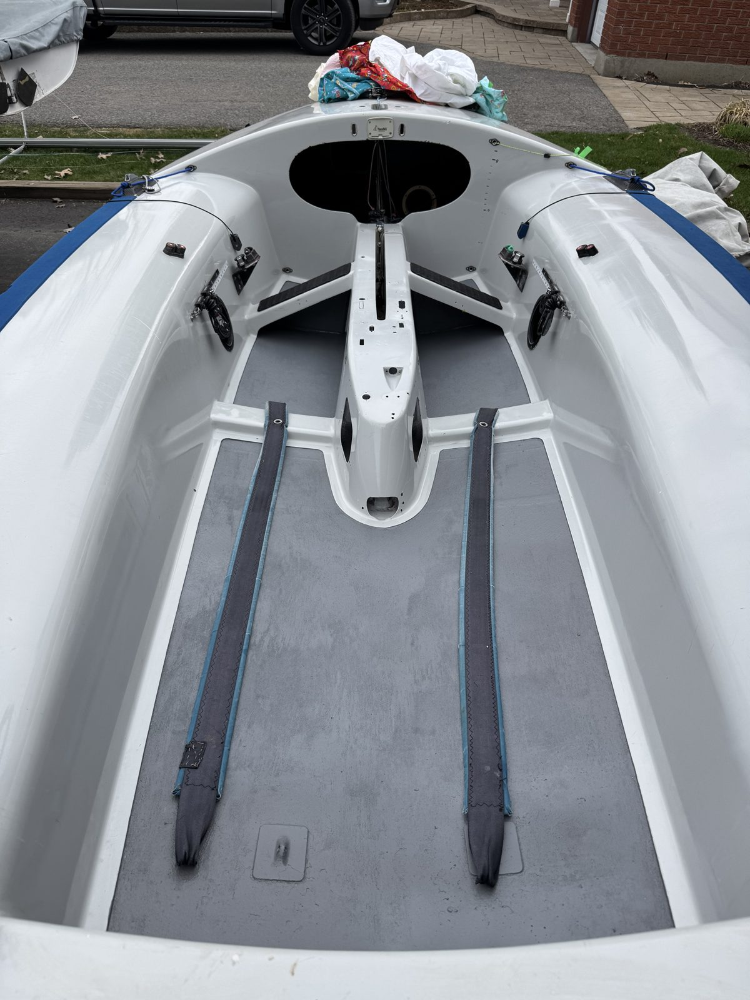

Before

After

Refinishing
Cockpit Floor Repaint
The old floor paint was flaking and peeling across the cockpit sole. Stripped it back, prepped the surface, and laid down a fresh, even non-skid finish — grippy underfoot and ready for another season of racing.